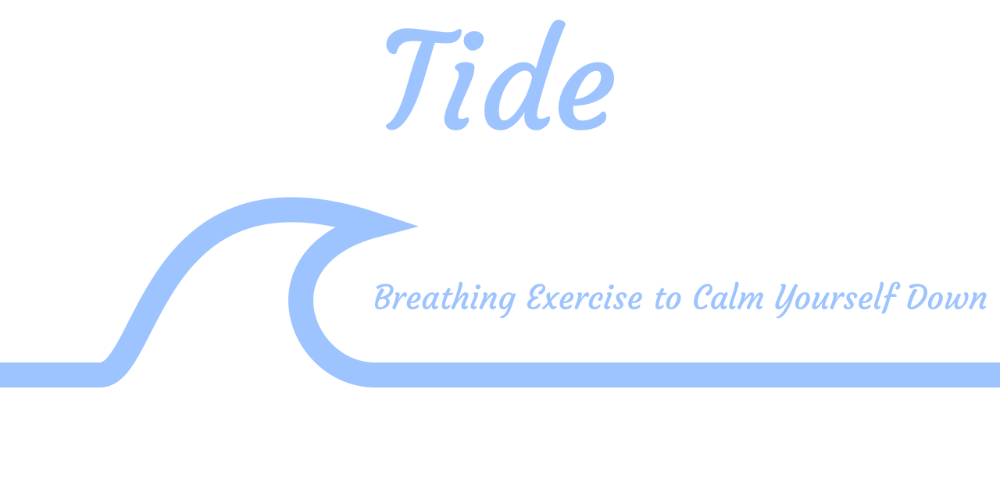

🌊 Tide - Breathing Exercise to Calm Yourself Down



Tide is an application that helps reduce panic attacks with a simple breathing exercise.
Official website: cynnexis.github.io/tide/
🎯 Goals
Panic attacks can happen anywhere, at anytime. In a world where we have access to a limitless number of digital resources at the tip of our fingers, we can reduce those attacks through different ways (apps, videos, etc.). However, as I experienced multiple times, most of those resources are placed behind advertisements, which can be irritating or even aggravating depending on the content. Those useful resources should always be available for people traversing those delicate moments, and have an ads-free experience.
Hence, I initiated Tide, a very simple app that help the user to calm themselves down by timing the breath in and breath out, and imitating the diaphragm dilatation, while being free with no advertisements. As a result, anyone can have this application and use it with no stress of being disturbed by one of this awful and distressful ad.
📥 Download built releases
You can download the built executables or installers from the release page, or from here to get the latest version:
Android:
iOS:
⚠️ This package has not been signed.
⚠️ The developers behind this project do not have a macOS and an iPhone. This package has been compiled through the CI/CD workflow, with the OSX runner. As a result, it has not been tested, and might not work as expected.
Windows:
Web:
- The web version is released at cynnexis.github.io/tide/
- Tide web archive (
.zip)
The web release is a compressed archive containing the built HTML, CSS and JavaScript files to serve the application.
🔌 Getting Started
The following instructions will get you a copy of the source code, and help you execute it.
📦 Requirements
This project requires Flutter, SDK version: minimum 2.3.0.
⚒️ Installation
The first thing to do is to download the project, either by downloading the ZIP file and extract it somewhere in your machine, or by cloning the project with git clone https://github.com/Cynnexis/tide.git tide.
Then, you need to configure the project by creating tide.yaml at the root of the project.
You can copy it from tide.sample.yaml to have the structure of the configuration.
Then, edit it to configure the Tide project and customize it.
Note that you can rename this file
tide.yml(and not.yaml), but you will need to change the asset name inpubspec.yaml.
The following steps will assume that the current directory is the project root.
flutter create --no-overwrite .flutter pub getflutter run
The app should be running now.
🐳 Using Docker
You can build a Docker image to serve the web application of Tide.
All Docker files are stored under the docker/ folder, but you can use the Makefile commands to build it.
To build them, enter the following command:
make build-docker
This command will call docker/build.bash, a bash script that uses tide.yaml to build the Dockerfiles.
At the end of the process, you should have the Docker image cynnexis/tide:web, that you can use to serve the application:
With the Makefile:
make docker-server
... or with the docker command:
docker run -d \
--name=tide-web \
--hostname="tide-web" \
--publish 80:80 \
-v "/etc/timezone:/etc/timezone:ro" \
-v "/etc/localtime:/etc/localtime:ro" \
-e TZ \
"cynnexis/tide:web"
And connect to http://localhost:80/
✅ Tests
Tide has units, widgets and integration tests. This section will help you understand how tests are structured, and how to execute them.
Unit and Widget Tests
Unit and widget test files are stored under the test/ directory.
All files that ends with _test.dart are considered test files.
Most widget tests uses golden files to assert that they render as expected.
However, according to the Flutter issue #36667, golden images might change from one platform to another.
That is why all golden images stored in test/golden-images/ are separated in sub-folders representing the platform.
However, not all golden images might have been created, as the platforms might not be accessible by the developer(s).
If you notice that the golden files are missing for your platform, please execute the following command at the root of the project:
make update-goldens
... or:
flutter test --update-goldens --dart-define=FLUTTER_TEST=true
This will generate all golden images for your platform. We encourage you to create a pull-request with the new golden images to contribute to the project!
Once the golden files are ready, you can execute the tests with:
make test
... or:
flutter test --dart-define=FLUTTER_TEST=true
You can also execute the test in a Docker container.
To do so, first build the cynnexis/tide:sdk Docker image:
./docker/build.bash --only=sdk
Then, execute:
make docker-test
... or:
docker run -it --rm --name=tide-tests cynnexis/tide:sdk test --concurrency=1 --dart-define=FLUTTER_TEST=true
Integration Tests
Only one integration test workflow has been created, and is stored under integration_test/tide_test.dart.
Desktop and mobile devices
To launch it for desktop or mobile devices, use:
make test-integration
... or:
flutter test --dart-define=FLUTTER_TEST=true integration_test/tide_test.dart
Web
To launch it for web, you first need to download the ChromeDriver and launch it:
chromedriver --port=4444
In another terminal, execute the following command at the root of the Tide project:
make test-integration-web
... or:
flutter drive \
--driver=test_driver/integration_test.dart \
--target=integration_test/tide_test.dart \
--dart-define=FLUTTER_TEST=true \
-d web-server
🏗️ Build With


🤝 Contributing
To contribute to this project, please read our CONTRIBUTING.md file.
We also have a code of conduct to help create a welcoming and friendly environment.
✍️ Authors
Please see the CONTRIBUTORS.md file.
📄 License
This project is under the GNU Affero General Public License v3. Please see the LICENSE file for more detail (it's a really fascinating story written in there!).
Libraries
- about_app_dialog
- animated_breathing
- app_bar
- assets
- breathing_bubble
- breathing_exercise_page
- config_file
- constants
- error_tile
- fullscreen
- fullscreen_io
- fullscreen_stub
- fullscreen_web
- generated_plugin_registrant
- home_page
- hotkey
- iso_lang_mapping
- list_extension
- locale_parser
- main
- rounded_material
- settings
- settings_page
- slideshow
- theme
- timer_form
- user_tips